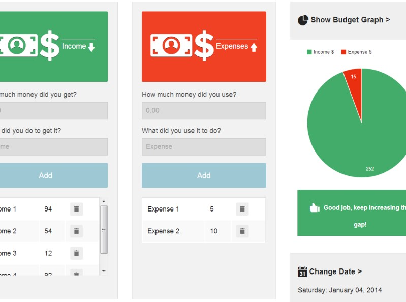
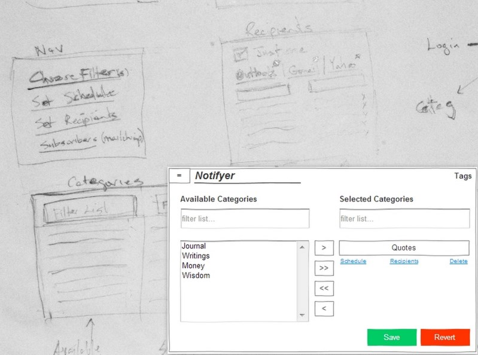
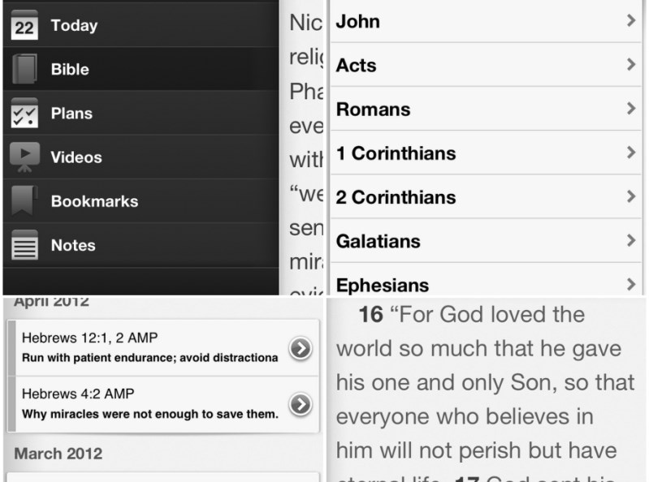
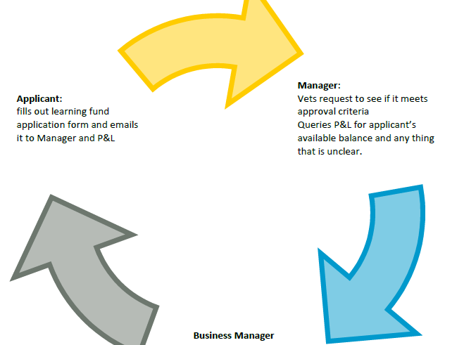
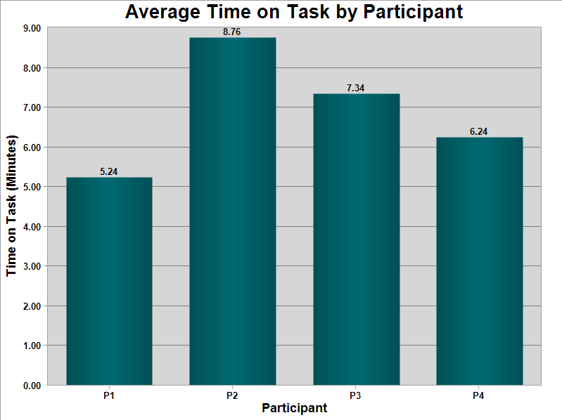

Byron
Byron Buckley
Hi, I'm Byron Buckley, a Front-end Developer1 interested in methods of building user interfaces. My background includes working on distributed teams to produce standards-compliant + cross-browser compatible markup for client handoff or server-side integration.
I stay current by leveraging the curated content2 of a few industry newsletters and keeping abreast of common front-end guidelines3 and best practices4.
Front-end Development is my core skill, but I've also completed a graduate program with the University of Baltimore5 for an academic perspective of design.
Footnotes
- Front-end Defined: UX, HTML, CSS and jQuery, with a smattering of Angular directives and the like (React, Knockout) thrown into the mix.
- Twitter List curated by Front-end Rescue
- Sass Guidelines
- CSS Guidelines
- Course Descriptions
Works
Blog


Contact
Designing for Down Syndrome

Tasked with researching and designing a Budgeting application for a underserved user group, I selected individuals with Down syndrome.
Down syndrome (DS) is a disorder that manifests itself in disabilities that affect all three major types of capabilities (cognitive, motor, and perceptual).
My findings and resulting prototype are available below.
Notifyer

Do you have a collection of many and varied notes that you saved because some quip, quote or poem inspired you? Did you pen your life's vision, come up with a mantra and subsequently forget it? When was the last time you were inspired by word's you have already read?
Notifyer will randomly select and send you your forgotten gems on the schedule you set.
Be re-inspired!
Bible App History

You're reading a book, you're somewhere in the middle of chapter three when you remember something from chapter one, you stick your right thumb in on the current page, and flip the pages toward chapter one until you find the page in mind. You hold the position of both pages looking back and forth, making comparisons.
Sounds familiar?
I noticed the absence of this in YouVersion.com's Bible app. The answer lies in the web browser. Every browser has back/forward buttons for quick navigation. How can this model be utilized in the Bible app? Take a look at my prototypes for possible implementations.
Contextual Inquiry

A contextual inquiry is a technique utilized for user and task analysis; it attempts to answer two questions:
- What matters to people about their process?
- How should we respond?
Image Collaging
Collaging1 is a projective technique by which participants select images that represent how they feel about a particular topic. The participants then explain to the moderator the reason they chose each image. The collage becomes an instrument through which participants are able to express needs and feelings that they might not otherwise have been able to articulate.
Usability Testing
Usability testing refers to a process that employs people as testing participants who are representative of the target audience to evaluate the degree to which a product meets specific usability criteria.